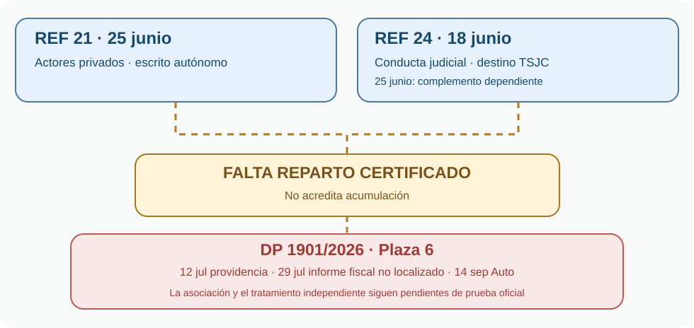
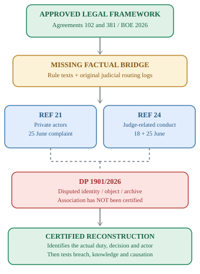

Acuerdo 102 aprueba texto refundido de normas, adaptado a LO 1/2025.
SALA DE GOBIERNO TSJC · 23 NOVIEMBRE 2026 · CORRESPONDENCIA DELIMITADA
A11: normas de reparto y dos denuncias de identidad distinta
El Acuerdo 381/2026 tomó conocimiento de la solicitud gubernativa A11 y dispuso entregar la certificación del Acuerdo 102/2026 y las normas aprobadas. En los tres PDF recibidos el 23 de noviembre consta la certificación, pero no el texto operativo completo. El recorrido individual de REF 21 y REF 24 permanece pendiente de certificación.
Documento contextual, no presentación judicial ni recurso. Última revisión: 23 noviembre 2026.
SOURCE STATUS / 2026
Lo que sí comunica el TSJC
A11, solicitud gubernativa, registrada con REGAGE26e00082052687.
Acuerdo 381 toma conocimiento de A11 y sus anexos y ordena entregar certificación y normas.
Oficio de Presidencia de 20 de noviembre; mensaje con tres PDF recibido el 23 de noviembre.
La obligación de facilitar las normas no convierte el oficio en una decisión judicial sobre el fondo ni en prueba de corrupción.
RULES / RECORDS / REMITTAL
Lo que no determina
| Cuestión | Situación comprobable | Resultado |
|---|---|---|
| Aprobación | Texto refundido aprobado por Acuerdo 102 (13 mar); Acuerdo 381 comunica aprobación CGPJ de 27 abr. | Establecido documentalmente |
| Texto normativo | No está entre los tres PDF adjuntos; solicitar copia y versión auténtica. | Falta en esta entrega |
| Vigencia | ¿Qué normas y excepciones eran aplicables el 18 y 25 jun y el 9 jul? | Sin completar |
| Remisión REF 24 | Impreso dirigido a TSJC; anotación manuscrita y traslado pendiente de certificación. | No certificado |
| REF 21 / DP 1901 | Presentación autónoma, material 9 jul en DP 1901; falta registro e índice judicial íntegros. | Relación por reconstruir |
| Informe fiscal 29 jul | Falta versión firmada, autor e índice del material examinado. | No localizado |
Expedientes gubernativos de cabecera 7/77 y 237/261: se conservan las diferencias y se pide identificar su función registral; no se infiere falsificación.
Dos denuncias y una asociación no certificada


Verde: acto oficialÁmbar: documento pendienteAzul: vía investigativaRojo: contradicción procesal, no delito
Separación de vías. A11 no pide un pronunciamiento sobre competencia penal ni el reparto individual. A01 y A04/Exp. Gub. 38/2026 siguen vías propias. Los identificadores «21» y «24» son localizadores privados del corpus: en la carátula de REF 21, «21» aparece en un campo de copias; ninguno de los dos constituye por sí solo un número judicial certificado.
Derechos y límites. La falta de un archivo en el mensaje no equivale a ocultación deliberada. La respuesta tampoco establece que REF 21 y REF 24 fueran acumuladas, que el juez actuara ilícitamente ni que la investigación sobre particulares quedara resuelta por el Auto de 14 de septiembre. Las alegaciones económicas y penales más amplias se examinan separadamente y con prueba adversa.
Distinta norma oficial. El turno 2 de la Sala de lo Civil y Penal para causas contra jueces y fiscales por hechos del cargo consta en BOE-A-2026-3856; se distingue de las reglas de Instrucción solicitadas por A11 y no prueba que REF 24 fuera remitida o admitida por dicha Sala.
RELATED / SEPARATE
Registro concursal y alegaciones más amplias
Los actos del administrador concursal (11 feb 2019), del fiscal Ricardo de Mosteyrín Sampalo (12 mar 2019) y de la Sentencia 163/2023 pertenecen a una secuencia de la calificación culpable distinta del objeto de A11. La sentencia estimó parcialmente y rechazó o limitó pretensiones. Las alegaciones de actuación concertada y blindaje siguen siendo alegaciones, no responsabilidad penal establecida.